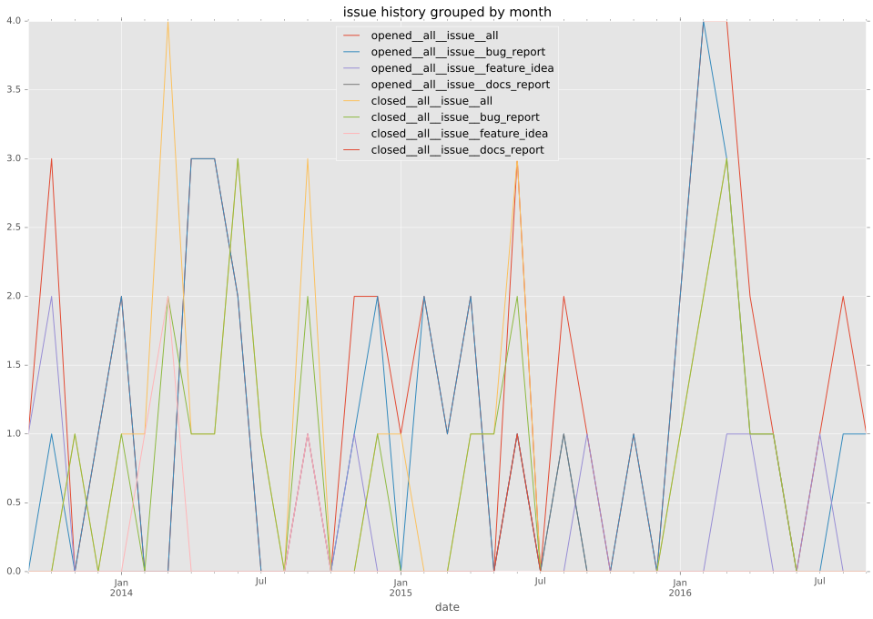
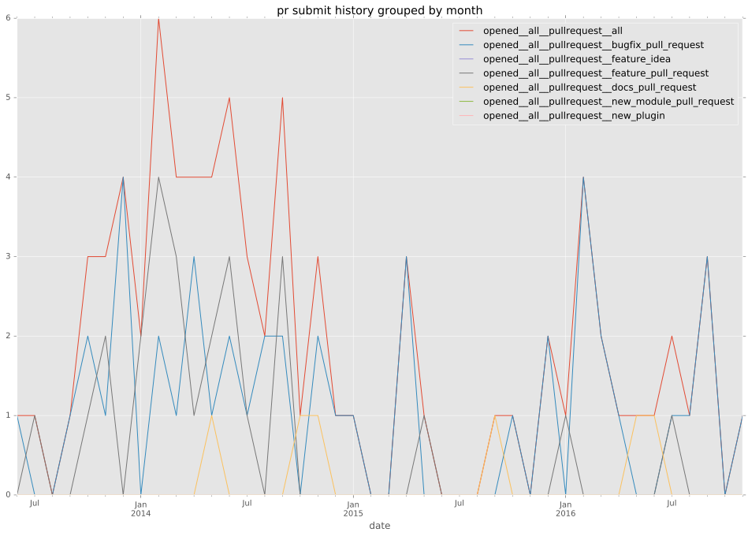
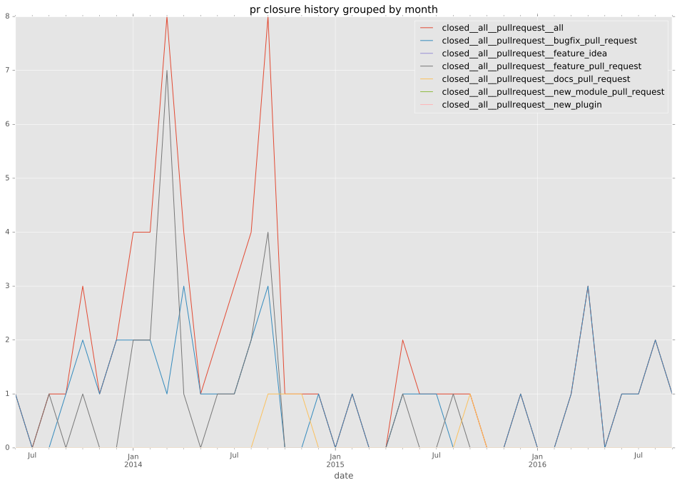

authors
- adq
maintainers
- ansible
contributors
- mmoya : 29 commits
- jimbydamonk : 8 commits
- jimi-c : 7 commits
- erydo : 7 commits
- mpdehaan : 5 commits
- markocelan : 5 commits
- kalefranz : 5 commits
- cewood : 4 commits
- zimbatm : 3 commits
- willthames : 3 commits
- steenzout : 3 commits
- bcoca : 3 commits
- altruism : 3 commits
- shawnsi : 2 commits
- jctanner : 2 commits
- dhml : 2 commits
- shaunbrady : 1 commits
- selivan : 1 commits
- patrys : 1 commits
- mpappas86 : 1 commits
- mikeputnam : 1 commits
- kwoodson : 1 commits
- follower : 1 commits
- Hypermanzer : 1 commits
- CorbanR : 1 commits
total issue counts
feature pull request: 26
docs report: 3
pullrequest: 81
docs pull request: 8
bugfix pull request: 46
feature idea: 11
issue: 54
bug report: 41
issue history

pullrequest history


days open by issue type
bugfix pull request
count: 60
std: 95.7325901329
min: 0
max: 475
median: 1.0
mean: 44.5
all
count: 134
std: 91.404036264
min: 0
max: 558
median: 8.0
mean: 47.9626865672
pullrequest
count: 0
std: nan
min: nan
max: nan
median: nan
mean: nan
docs pull request
count: 8
std: 49.9326331886
min: 0
max: 145
median: 4.5
mean: 24.875
docs report
count: 1
std: nan
min: 0
max: 0
median: 0.0
mean: 0.0
feature pull request
count: 31
std: 78.3212161756
min: 0
max: 305
median: 13.0
mean: 48.7096774194
feature idea
count: 4
std: 62.1952570539
min: 19
max: 146
median: 142.0
mean: 112.25
issue
count: 0
std: nan
min: nan
max: nan
median: nan
mean: nan
bug report
count: 30
std: 107.106827111
min: 0
max: 558
median: 14.0
mean: 53.3
closures grouped by total days open